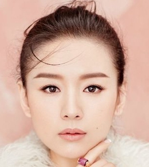
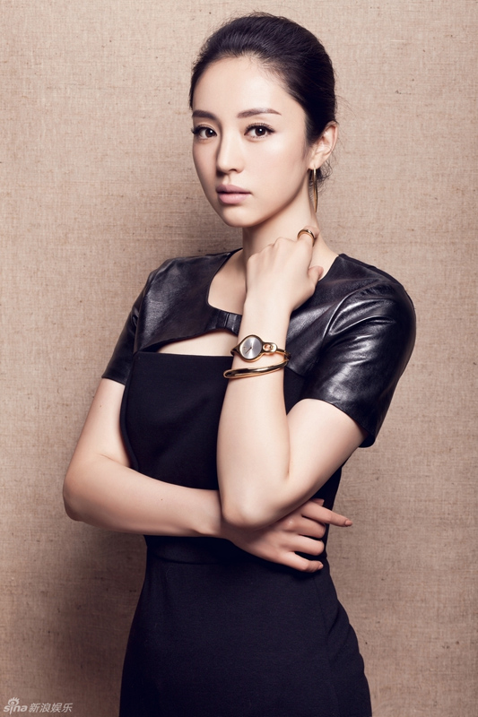

The story revolves around the secrets during the Three Kingdoms era, focusing on the intense rivalry between the Imperial Han and Cao Cao rather than the more famous events in history as we know it.
- Prénom: Tian Yu
- Nom de Famille: Ma
- Nom Chinois: 马天宇
- Nationalité: Chinoise
- Sexe: Masculin
- Date de Naissance: 12 juillet 1986
- Age: 32

- Prénom: Qian
- Nom de Famille: Wan
- Nom Chinois: 萬茜
- Nationalité: Chinoise
- Sexe: Féminin
- Date de Naissance: 14 mai 1982
- Age: 36
- Prénom: Elvis
- Nom de Famille: Han
- Nom Chinois: 韩东君
- Nationalité: Chinoise
- Sexe: Masculin
- Date de Naissance: 2²1 juillet 1992
- Age: 26

- Prénom: Jie
- Nom de Famille: Dong
- Nom Chinois: 董潔
- Nationalité: Chinoise
- Sexe: Féminin
- Date de Naissance: 19 avril 1980
- Age: 38

- Prénom: Xuan
- Nom de Famille: Dong
- Nom Chinois: 董璇
- Nationalité: Chinoise
- Sexe: Masculin
- Date de Naissance: 5 novembre 1982
- Age: 35